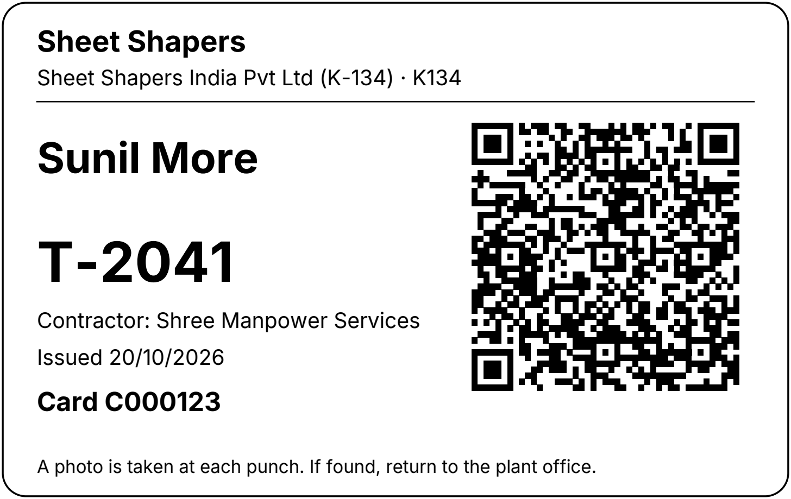
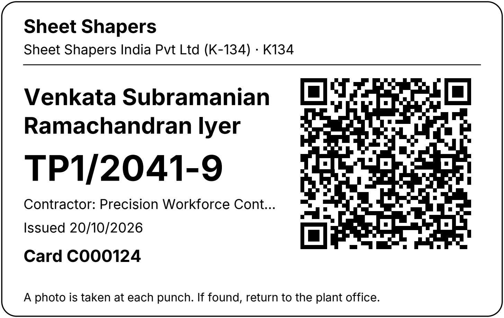
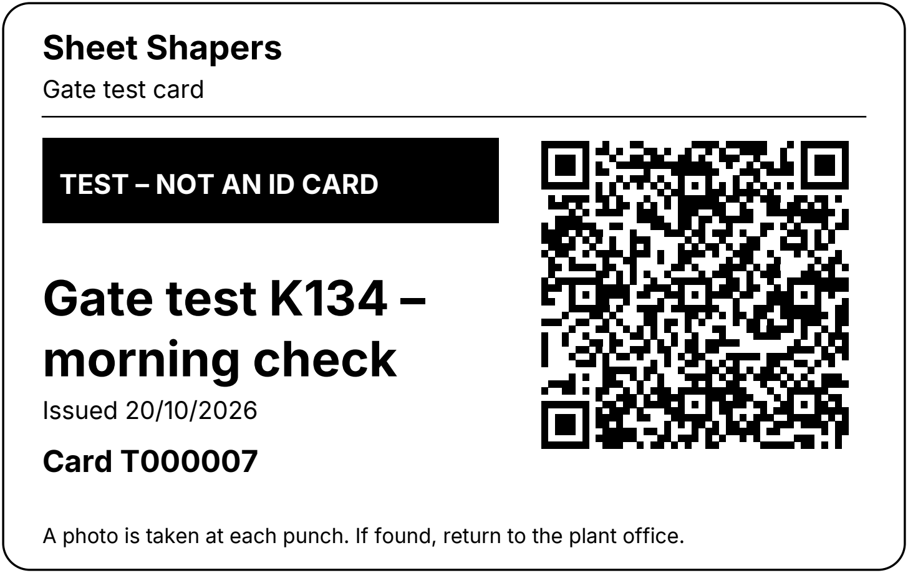
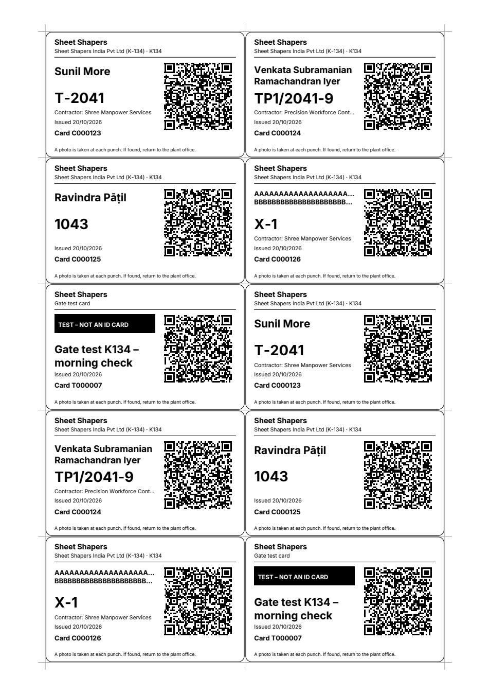

The printed card
What the Super Admin gets when pressing Print. These pictures come from the real PDF code (CR80 size 85.6 × 54 mm, Inter font), so what you see is what is printed. The names are invented.
PDF, opens in a new tab85.6 × 54 mm
Employee card (temporary worker with a contractor)

1 2 3 4 5 6 7- 1Plant name and plant code printed (SRS FR-14). After a transfer this no longer matches, so the list shows "Reprint needed".
- 2Name and employee code in big letters, readable by the guard at arm's length.
- 3Contractor line, only for contract workers. Long names are cut with "…".
- 4Issue date only. No end date is printed, so the end can be extended or shortened without reprinting. The server decides what is valid.
- 5Card serial (C000123). Used to find the card in Ctrl+K and the list.
- 6Vector QR, error correction Q: stays sharp at any print size and still scans with about 25% scratched.
- 7Privacy line: a photo is taken at each punch; if found, return to the plant office.
Long name and long contractor

- A name of up to two lines fits; longer names shrink a little first. Unicode names print correctly (Inter is bundled).
- A contractor name that is too long ends with "…". Employee codes of any shape (here TP1/2041-9) stay large.
Test card (F-27)

A B- ABig black band "TEST – NOT AN ID CARD" so nobody mistakes it for a worker's card. No employee, no plant.
- BSerial starts with T (T000007) and the label says where it is used. It never ends by date; revoke it if lost.
A4 sheet of 10 cards

- 10 cards per sheet, 2 across and 5 down, with thin cut marks at the margins.
- Order as selected, sorted by plant, contractor, then code, so a contractor's cards stay together.
- At most 200 cards per print (20 sheets). The print dialog says so before it opens the PDF.
- File names card-C000123.pdf and cards-20-10-2026-37.pdf. The PDF is never shared through a public link.
- Every print is counted and written to the audit log; it also records the plant printed on the card.
Design note. This card is black on white on purpose: it must print well on any office printer and scan under shop-floor light. The brand colours stay in the website, not on the card.